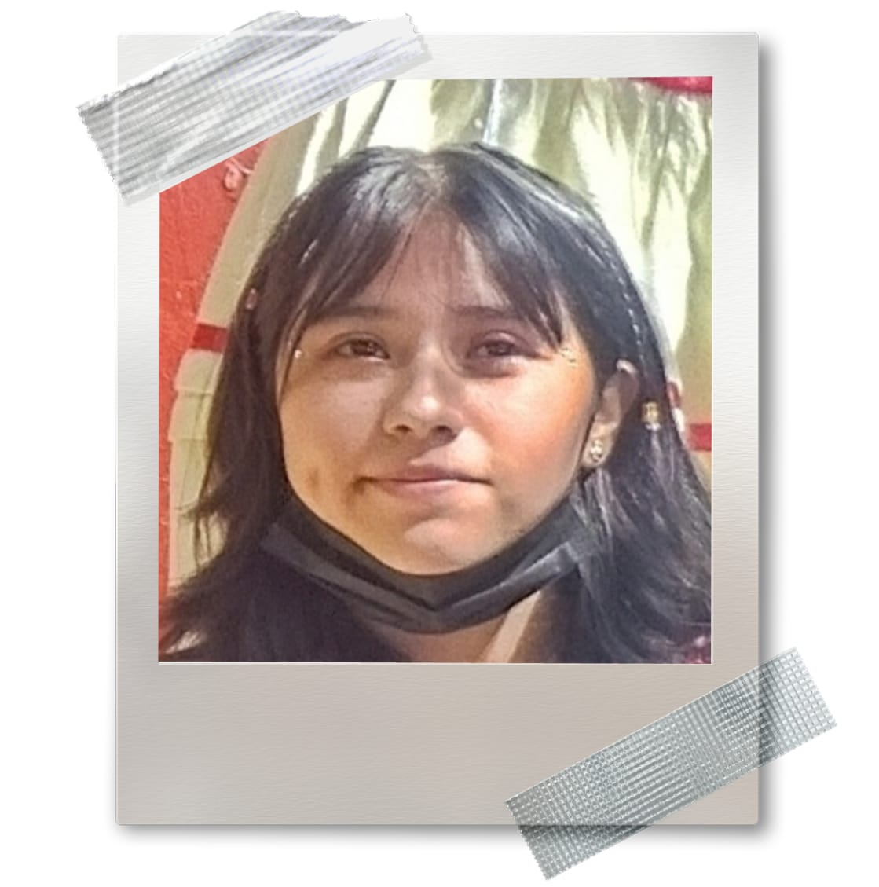
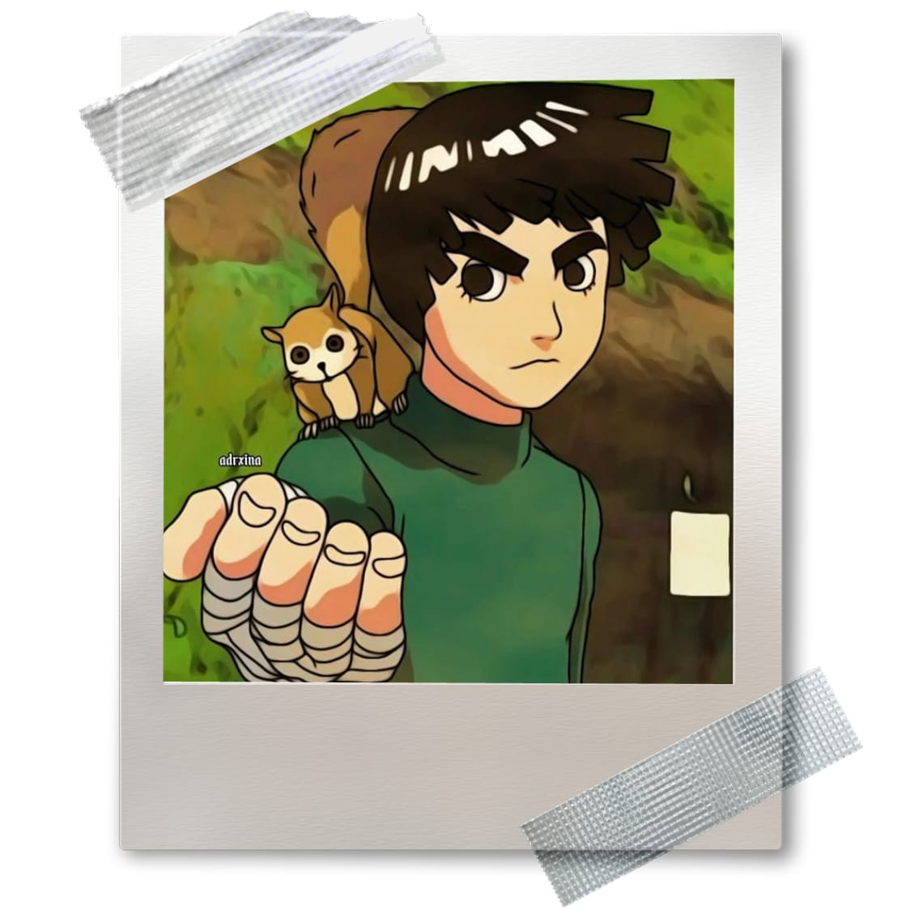
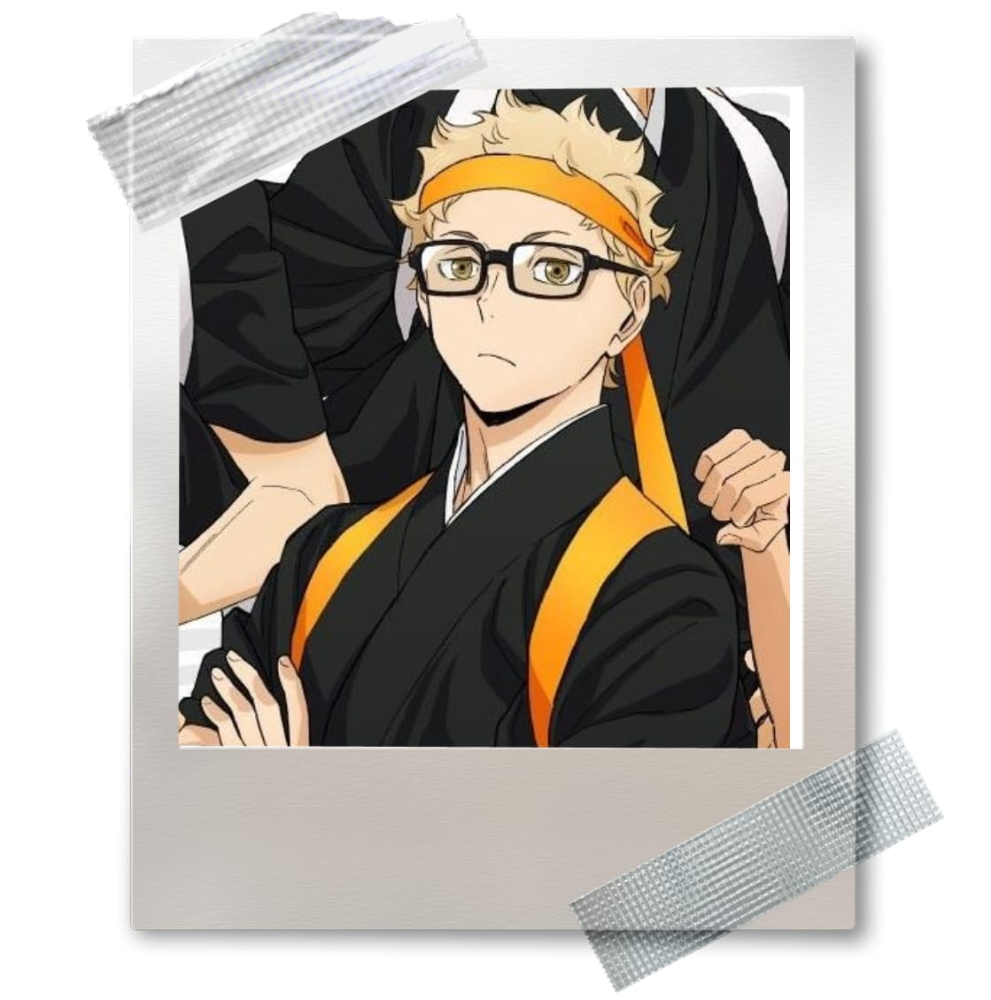
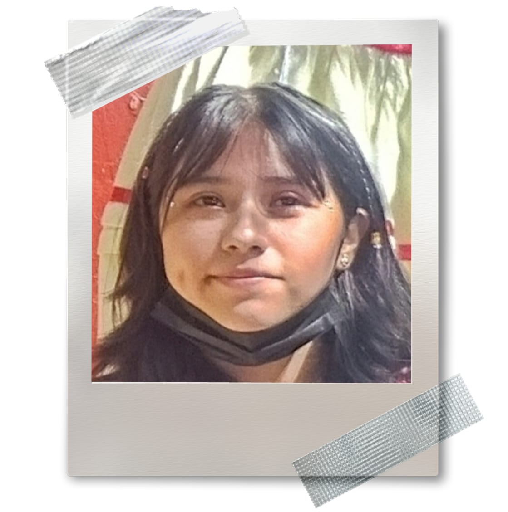
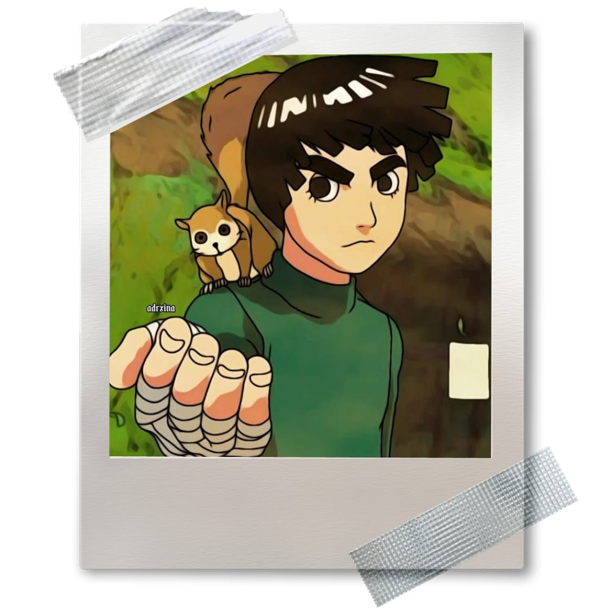
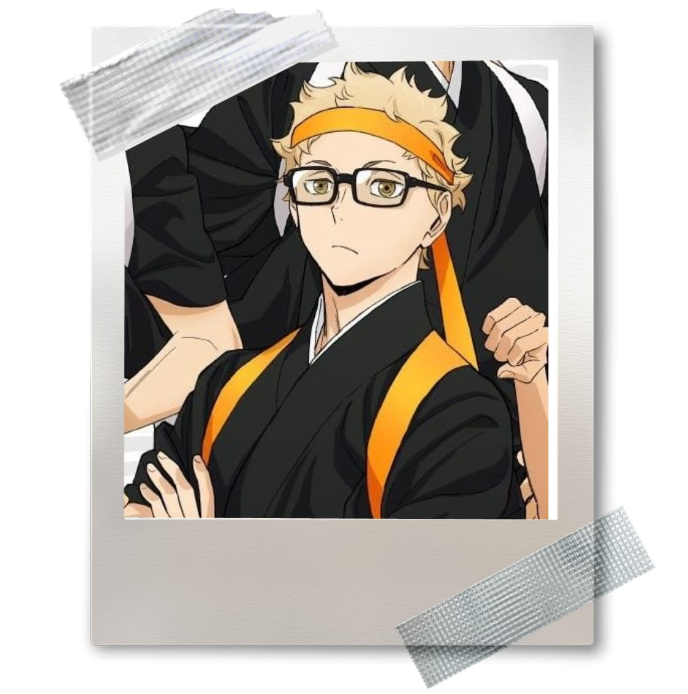
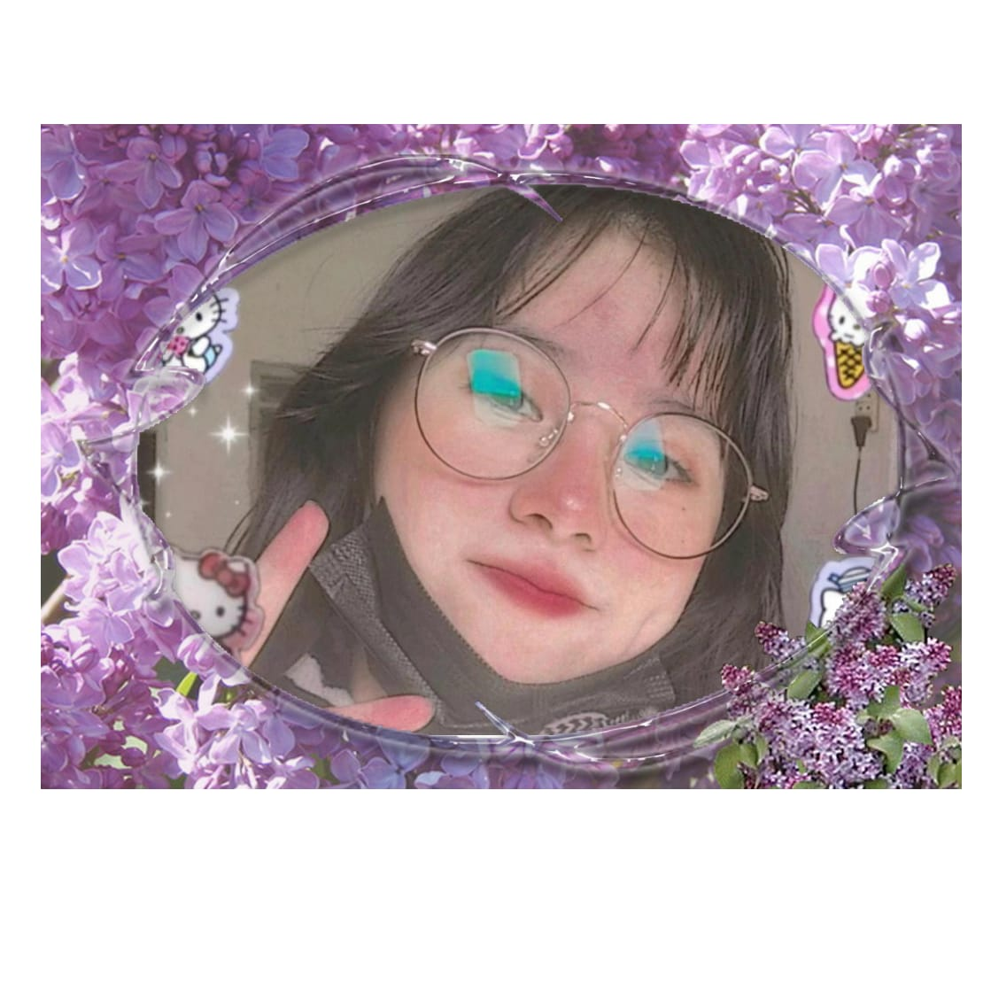

En primer lugar te queria felicitar por cumplir un año mas (aunque ya pasaron varios dias xd), tambien desearte una feliz navidad y un prospero año nuevo para y tu familia.
Solo quiero decirte gracias por ser una amiga increible, literal eres una excelente amiga y maravillosa persona. Tuve mucha suerte de ser tu amigo por todos estos años, nunca crei agarrar tanto cariño a alguien de esa forma, como a ti y nuestros amigos. Realmente no sabes cuanto me alegra que de nuevo nos hablemos, nos veamos, ademas no sabes lo feliz que me senti de ver de nuevo a ti, Yurem y Bismark reunidos despues de tanto tiempo.
Nada mas te deseo todo lo mejor para este año y el siguiente y despues el seguiente del siguiente, asi para toda tu vida, espero que seas muy feliz, en caso de que no, que sepas que aqui estamos tus amigos para apoyarte en todo lo que necesites.
Espero que nos sigamos viendo y que nuestra amistad nunca acabe.
-Jose
Prostata: Perdon por darte un regalo asi, srryy, procastine mucho para comprar algo adecuado, espero haberlo compensado en la feria.
